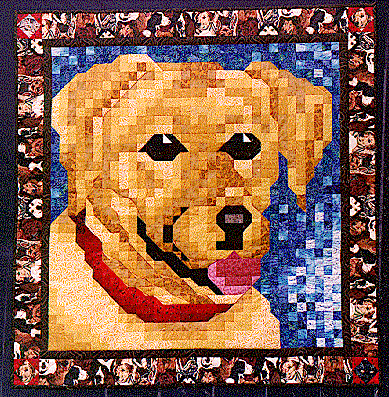

The Cody Quilt (Yellow Lab Mosaic)The Cody Quilt (Yellow Lab Mosaic)
The Cody Quilt (Yellow Lab Mosaic)The Cody Quilt (Yellow Lab Mosaic)
| #P121..........$7.95 44" X 45" I would like to introduce you to my "nephew" Columbia Prince Codence, or as we call him, Cody. He is a fun loving Yellow Labrador Retriever (are there any other kinds?). My boys adore him and love to play fetch with him when we visit. Last I heard, he was the star salesman at Pine Lake Fabrics. If you have a black or chocolate lab, you can just change the golds in this pattern to blacks or browns to make him look like your dog! |
 Copyright 1997, Jane L. Kakaley |